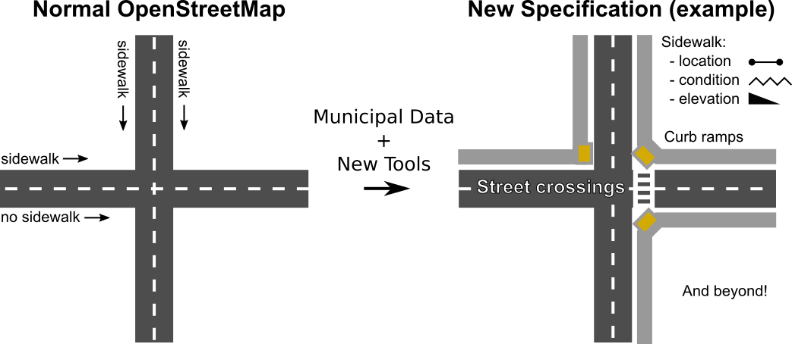

Sidewalks provide a primary mode of travel that supports nearly all other travel options, leisure, recreation and community activities. This project seeks to make pedestrian ways, particularly sidewalks, first class members of an open data transportation network. The OpenStreetMap (OSM) project has made available extensive, user-contributed open data on transportation networks, providing the basis for many use cases and downstream activities, including rich analytics, travel route optimization, city planning, and disaster relief. Some footways have been annotated in OSM as independent routes. However, sidewalks in the built environment have generally been treated an addendum to streets.
As a result, sidewalks in OSM have spotty coverage and an unintuitive implementation. The current standard makes user contribution difficult and fails to serve many use cases, including the needs of people with limited mobility. This project proposes to jumpstart an effort to generate an OSM-based pedestrian network with global coverage.
There are two phases to the proposed DSSG work, each of which represents a significant contribution to different stakeholder groups.
The DSSG team worked to adapt an OSM data layer for use with sidewalk data, the group learned what nuances in the sidewalk data impact both standardized incorporation into OSM as well as ability to route. The group drafted an OSM standard for sidewalk representation and annotation with the following objectives:
The DSSG team design and implement prototype tools to import sidewalk data from existing datasets and manual annotation. These tools must support recognition of potential conflicts between newly imported and existing pedestrian OSM data in order to facilitate supervised integration of new sidewalk information. Specifically, the DSSG team built and adapted:
Enable rapid scaling. This effort is focused on 3 key areas:
*Urban centers identified based on rankings in Foot Traffic Ahead, a walkability study published by Christopher B. Leinberger & Michael Rodriguez of The George Washington University School of Business
Looking forward our goal is to expand OpenSidewalks providing accessible pedestrian routing solutions worldwide. Our planned path forward is outlined as follows:
We attempt to use terminology consistent with OSM’s language for pedestrian ways. We use “sidewalks” to delineate pedestrian-accessible footways associated with larger streets. Our standard applies to the broader category of “pedestrian ways” or a “pedestrian network,” which includes all paths, sidewalks, crossings, and other routes that are accessible by foot or with the use of assistive devices, regardless of accessibility by other forms of transportation.
OpenSidewalks is led by the Taskar Center for Accessible Technology (TCAT) at the University of Washington, whose mission is to develop and deploy technologies that improve quality of life for people with disabilities.
Urban@UW, a partnering University of Washington coalition, has fostered long-term partnerships with key leaders and stakeholders to prioritize urgent urban challenges and support equitable urban growth.
We are also thrilled to partner with Feet First, the only pedestrian advocacy group operating in Washington State, promoting community engagement in pedestrian ways and supporting projects like Safe Routes to School.
The University of Washington's eScience Institute provided an opportunity for the OpenSidewalks project to develop as a part of their Data Science for Social Good program that took place in the summer of 2016. Through this program, an interdisciplinary team of project leads, data scientists, and student fellows spent 10 weeks pushing the project forward.
Nick Bolten
Anat Caspi
Vaughn Iverson (primary)
Bryna Hazelton (secondary)
Tom Disley
Meg Drouhard
Jess Hamilton
Kaicheng Tan